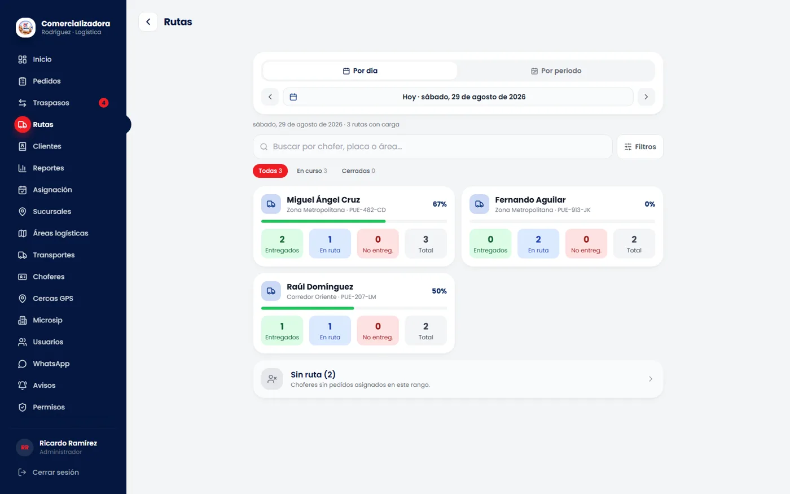
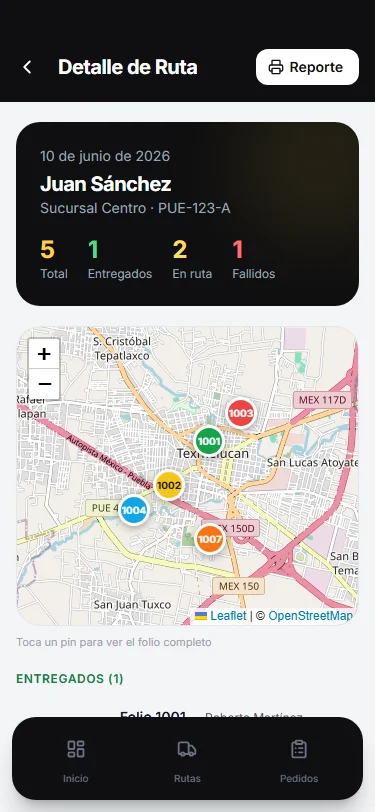

Panel del administrador (web) y detalle de ruta en la app del chofer (Android/iOS). Datos de demostración.Admin panel (web) and route detail in the driver app (Android/iOS). Demo data.
Comer Rodríguez Logística
Comercializadora Rodríguez · sistema de entregas para una distribuidora con varias sucursalesComercializadora Rodríguez · delivery management for a multi-branch distributor
Del pedido a la entrega: ventas captura, almacén surte, el supervisor asigna chofer y ruta, el chofer entrega con evidencia fotográfica desde el teléfono y el cliente rastrea su pedido con un QR sin iniciar sesión. Siete roles, varias empresas y sucursales en la misma instalación.
Order to doorstep: sales captures, warehouse fulfils, a supervisor assigns driver and route, the driver delivers with photo evidence from the phone, and the customer tracks the order via QR without logging in. Seven roles, several companies and branches in one installation.
- Flujo de estatus completo (pendiente, asignado, en ruta, entregado o no entregado) con reasignación, geocercas y control de flota.
- Full status flow (pending, assigned, en route, delivered or failed) with reassignment, geofences and fleet control.
- Avisos automáticos por WhatsApp al cliente ("va en camino", "entregado" con foto) en un microservicio aparte; la línea se vincula por QR desde el panel.
- Automatic WhatsApp notices to the customer ("on its way", "delivered" with photo) in a separate microservice; the line is linked by QR from the panel.
- Sincronización con el ERP Microsip (Firebird) por una interfaz desacoplada, notificaciones push con Firebase y build automatizado del APK.
- Sync with the Microsip ERP (Firebird) through a decoupled interface, Firebase push notifications and automated APK release build.
- Instalado en el servidor del cliente con HTTPS (Caddy) y DNS dinámico; incluye guía de despliegue y generador de presentación comercial con capturas automáticas.
- Installed on the client's own server with HTTPS (Caddy) and dynamic DNS; includes a deployment guide and a sales-deck generator that screenshots every role automatically.
- Stack
- React 19, Vite, Tailwind, Capacitor (Android/iOS), Leaflet · Node, Express, Prisma, MySQL 8, JWT, Firebase Cloud Messaging, Baileys · Electron · Firebird
- Evidencia
- Evidence
- 185 commits, junio a septiembre de 2026 · 23 archivos de pruebas Jest + Supertest sobre base de datos de prueba · README del API con tabla de endpoints y Swagger185 commits, June to September 2026 · 23 Jest + Supertest test files against a test database · API README with endpoint table and Swagger